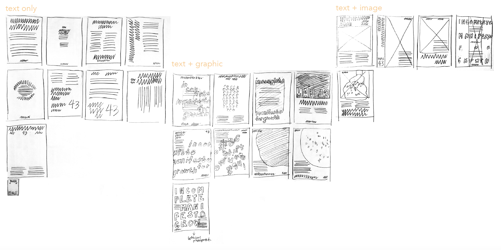

BODY TEXT/SUMMARY + THOUGHTS:
Bruce Mau’s “Incomplete Manifesto For Growth” is a 43-point guide for how to grow and explore creatively as a person and gain better control over one’s life. Rather than a great declarative document, this manifesto is more a set of principles to live and work by. Each point, accompanied by a short elaborative description, instructs one to shift and expand their perspective, do things that aid this process, and don’t do things that hold you back from your full creative potential.
Most if not all of the points are familiar and intuitive, things that we’ve often heard before or thought to ourselves at some point. They’re not revolutionary or groundbreaking, but they don’t need to be and don’t intend to present themselves as such. And in that way personal creative growth is like that as well--it’s not about finding and becoming something new or novel, but taking what you know and have and evolving to become a greater version of that. The points are familiar and easy to understand: “study”, “keep moving”, but also “slow down” and “listen carefully”. They tell you “don’t borrow money”, “don’t be cool”, “don’t clean your desk”, and “don’t enter competitions”, and to “stay up late”, “make new words”, “take field trips”, and “laugh”, among other things. This manifesto brings forth seemingly simple and familiar everyday activities as the key points to it’s argument making it much more approachable and digestible. The easy nature of each of the 43 points tells that personal growth needn’t be overly complex and aided by any great outside devices, but by small and personal acts: an internal and self involved process.
As per assignment and to test the different types of posters, I drew thumbnails with text only, text + graphic, and text + image. I found myself focusing on the text + graphic poster configuration and ended up with the best looking thumbnails for that. The image thumbnails were especially difficult since I had no idea what kind of image I would use.
In each of the ideas, I tried to make one big impactful and attractive element/point of focus, whether that’s the headline or the graphic or the image, to make a successful poster.

Production & Iteration
Composition
I settled on two different compositions I wanted to make for the final. The first one, taking inspiraiton from the imagery of alphabet soup and trying to convey the idea of fluidity, discoverance, and wholeness, reflecting similar ideas of growth from the manifesto. I arranged the letters from the headline in a circle to kind of emulate the soup and give contrast to the other gridded text elements. The second, with less metaphoric intention, was my try at incorporating the grid to the fullest. The first composition also utilizes the grid, but in a less straightforward and abundant manner.
I ended up going with the orange background alphabet soup composition for the more eye-catching color and graphics, and because I couldn’t figure out a satisfactory solution to the grid one.
I started with Avenir, a sans serif typeface for a sense of unity and roundness, especially with the capital letter “O”, and it fit my alphabet soup concept well. I used Avenir for all the text in the poster for that sense of unity. I tried playing with different contrasting typefaces like Sabon and Baskerville for the body text, trying to match the proportions of Avenir and contrast the stress and serifs, but the contrast looked too much and too unbalanced as Avenir is rather simple looking, and I’m using it for the display typeface and graphic elements Plus, all non-body text elements are in capital letters, so I thought there was enough contrast between those capitals and regular capitalization in the body text.
The Details
I initially had the headline with an outline of the text and then the text in color as a drop shadow to give more interest and match the alphabet soup situation, but with input from Mr. B, I opted to focus on working with the pure typeface, and just used contrasting styles of Avenir to add interest and emphasis. The leading is solid and the kerning is optical to give more balance to the header.
In the body text, I previously added a colored outline to phrases I wanted to emphasize, but opted to just italicize to match the header and contribute to the sense of unity.
The body text is split into two columns justified for better readability.